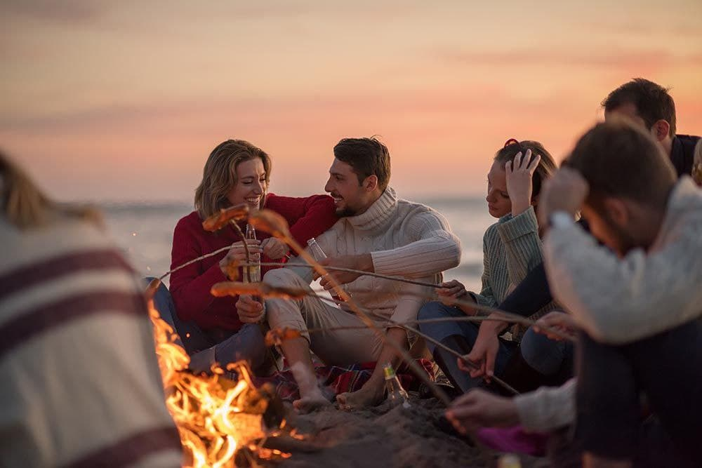
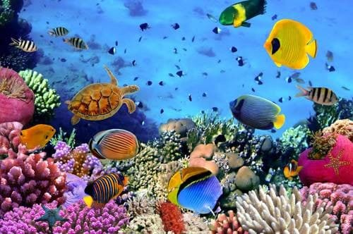
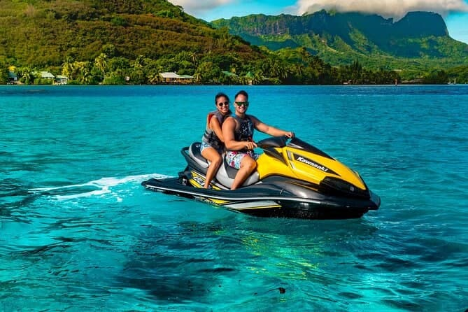

Pulau Kapas– Destinasi Pulau Yang Santai
Pulau Kapas pula terletak berdekatan dengan bandar Kuala Terengganu dan kalau nak ke sini anda perlu menaiki bot dari jeti di Marang. Pulau Kapas tidaklah sebesar Pulau Perhentian dan Pulau Redang, dan hanya 2 km panjang dan lebarnya pula sekitar 1 km.
Memandangkan Pulau Kapas ini tidaklah sepopular Pulau Redang dan Pulau Perhentian, maka kalau di musim cuti sekolah tidaklah terlalu sesak dengan kehadiran pelancong. Kebiasaanya pelancong ke sini lebih kepada nak releks-releks, berjemur di tepi pantai, diving dan juga snorkeling.
Terumbu batu karang di sini & ikan-ikan cantik tidak kurang menariknya untuk aktiviti snorkeling dan kalau anda nak bercuti di pulau di Terengganu yang tidak ramai dengan orang terutamanya di cuti sekolah, bolehlah ke Pulau Kapas. Pulau Gemia yang tidak kurang menariknya pula terletak hanya bersebelahan dengan Pulau Kapas.
Di sekitar perairan Pulau Kapas juga sering menjadi lokasi bot-bot nelayan untuk bercandat sotong terutamanya pada bulan Jun dan Julai. Setiap tahun, memang banyak badan kerajaan, NGO, badan korporat ataupun yang berkeluarga menyewa bot di jeti Marang untuk bercandat sotong di sekitar perairan Pulau Kapas.
Peta ke Pulau Kapas



Pulau ini mempunyai hutan tropika, air laut yang jernih, pantai pasir putih dan terumbu karang di perairan sekitarnya. Untuk ke sini, anda boleh menaiki feri dari Marang.